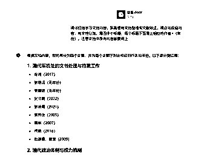

来源：https://lv9qj6hfr4z.feishu.cn/docx/FUzrd3Y2Goa32txqwiOcgCZmnlh
大家好 我荷包蛋又来了 这个从事ai写作两年 传统写作四年的荷包蛋又来了（想了解我可以看看我往期分享），今天为大家分享我从网络上收集到的一些的AI写作提示词指令（prompt）与我自己平时创作过程中的实操案例，主要包含gpt指令和kimi指令适用于日常工作写作和某红书和某公众号二创 等 方面的指令，希望对想入局ai写作的朋友有所帮助。
Chat gpt:https://chatgpt.com
kimi:https://kimi.moonshot.cn
文心一言：https://yiyan.baidu.com/
讯飞星火大模型：https://xinghuo.xfyun.cn/desk
阿里通义千问：https://tongyi.aliyun.com/
混元大模型：https://hunyuan.tencent.com/
字节豆包：https://www.doubao.com/
百川大模型：https://www.baichuan-ai.com/home
清华大学智谱青言（ChatGLM）：https://chatglm.cn/
华为盘古AI大模型：https://openi.cn/sites/11157.html
昆仑天工：https://search.tiangong.cn/
京东言犀：https://yanxi.jd.com/login/public/enter
1.基本原理：写好文章标题的核心就是利用好 开幕雷击。
开幕雷击: 顾名思义，就是你第一眼看到的内容，有令你感到震惊的言论或画面，仿佛遭受了雷击。
爆款标题“开幕雷击”的要素，有 7个:1) 金钱、数字; 2)性暗示;3)暴力;4) 死亡;5) 捷径;6) 异常、悬念;7)民族主义。标题里只要含有，开幕雷击7 个要素中的 2 个要素，基本你的文章打开率就有了保证，当然是包含的要素越多越好
2.标题公式：主人公（特征），故事主干，结局或异常
3实操案例：
得到结果：

得到稿子：
陈阿姨今年60岁，退休的这一天，她像往常一样起得很早，出门晨练，空气中弥漫着秋天的凉爽气息。这是她人生中一个全新的开始——终于告别了多年的工作，退休后每月10300元的养老金足够她过上安逸的生活。她的儿子王小峰也很高兴，想着母亲终于可以轻松享受生活，打算趁着母亲退休的机会，好好陪她一段时间。
然而，这个宁静的开始没能持续太久。就在她退休的第10天，一个本应再平常不过的早晨，陈阿姨突然晕倒在家中，再也没有醒来。
王小峰在医院听到医生的宣告时，愣住了。母亲去世了，离退休刚刚十天。
站在母亲的遗体前，王小峰突然觉得心口压得喘不过气。他开始回想母亲的每一天，回想自己曾经对母亲的态度。他曾经以为，等母亲退休后，时间还很多，他们可以一起享受天伦之乐。可是，母亲的离去是如此的突然，他甚至都来不及和她说最后一句话。
当他回到母亲的房间，看到她放在桌上的日记本，忍不住翻开。日记第一页，是母亲退休那天写的：
“今天，我终于退休了。儿子小峰今天来接我下班，他说以后要多陪陪我。这让我很开心，虽然过去几年他工作忙，但我总相信他是个孝顺的好孩子。以后的日子，希望能和小峰一起多做些开心的事。”
这一行行字刺痛了王小峰的心。他想到自己曾经对母亲的不耐烦、忙碌时的冷落，以及母亲默默承受的一切。就在她最需要陪伴的时候，自己却忙于工作，总觉得“以后还有时间”。他曾经多次告诉自己，等有时间了，再好好陪母亲。可是，他现在明白，世上没有“以后”了。
回忆像潮水一般涌来，王小峰开始反思自己与母亲的关系。
从小，母亲陈阿姨就承担着家里的大部分责任。王小峰的父亲去世得早，母亲既当爹又当妈，把所有的精力都投入到儿子的成长中。为了供他上学，母亲不惜加班加点，熬夜做兼职，辛苦的工作让她的身体越来越差，但她从不抱怨。王小峰深知这一切，可是在长大后，他却渐渐与母亲疏远了。
他大学毕业后在大城市里工作，母亲也没有过多打扰他，时不时打来电话，只是简单的问候。王小峰有时候忙，接了母亲的电话也没时间多聊。母亲每次总是说：“没事，你忙吧，照顾好自己就行。”可挂了电话后，母亲会在厨房里默默发呆很久。
直到有一次，母亲打来电话说自己身体不太舒服，王小峰仍然因为工作繁忙，没有及时回去探望。母亲那一次的生病不严重，但从那以后，她似乎开始变得沉默了很多，不再轻易打扰儿子。
在王小峰结婚后，母亲为了不打扰儿子的生活，甚至主动提出搬到自己原来的老房子里住。这让王小峰心里有些愧疚，但也因此安心了不少。他想：这样母亲不会干涉自己的生活，彼此也会有更多的自由。
然而，母亲和儿子之间的隔阂却悄然加深。一次，母亲来拜访王小峰家里，想和孙子玩一会儿，却被王小峰的妻子推脱说孩子要午睡了。母亲脸上露出失望的神情，但还是说：“没关系，我改天再来吧。”
母亲走后，王小峰的妻子埋怨道：“你妈总是突然跑来，也不提前打个招呼，我真不知道她在想什么。”
王小峰没有说话，他心里也觉得母亲有些“多余”，似乎她的存在让他的家庭变得有些不安宁。
母亲去世后，王小峰忙着处理后事，却在整理母亲的遗物时发现了另一个意外。他无意中翻到了一份母亲长期积累的存折，里面竟然有一笔不小的存款。王小峰大为惊讶，母亲平时生活节俭，怎么可能积攒下这么多钱？
后来，他从母亲的老朋友那里得知，原来母亲这些年在为他攒钱，打算将来给他买一套更大的房子。他从没想到，母亲晚年如此省吃俭用，却一直为他和他的家庭操心，连自己的退休金大部分也都存了下来。
想到这些，王小峰心如刀绞。
母亲的葬礼那天，王小峰在众人面前掩饰住了内心的痛苦，强撑着完成了所有仪式。但当所有亲友离开后，他回到空无一人的家里，忍不住捶打着自己的头，泪水止不住地流下来。他一次又一次地狂扇自己的耳光，喃喃自语：“都是我错，都是我的错！为什么没有早点意识到？”
他恍惚中仿佛看到母亲站在他面前，微笑着，眼神中透着无尽的包容和宽慰。
几个月后，王小峰辞去了原本繁忙的工作，选择了一份普通的工作。他不再追求功名利禄，也不再忙于应酬。他决定用更多的时间陪伴家人，陪伴妻子和孩子。他终于明白了，世上没有什么比亲情更重要，也没有什么比陪伴更珍贵。
当他偶尔回到母亲的旧房子时，依然会有一种空荡荡的感觉，但每次走进那个熟悉的小房间，他都会轻轻对着空气说：“妈，我来看你了。”
在母亲去世的那一刻，王小峰终于明白了：有些错，永远无法弥补。
指令：
小红书爆款文风指令:你是小红书爆款写作专家，你用以下步骤来进行创作:
从写作风格的列表中，随机选择 1 个风格，并贴出：1、王朔风格2、韩寒风格3、王小波风格4、吴晓波风格5、咪蒙风格6、亦舒风格7、刘慈欣风格8、席慕蓉风格9、张晓风风格10、龙应台风格11、毕淑敏风格12、宗璞风格
从表达语气的列表中，随机选择 1 个，并贴出：1.严肃2幽默3.愉快4、激动5，沉思6、温馨7 崇敬8.轻松9.热情10.安慰11.喜悦，12.欢乐，13.平和，14.肯定，15.质疑，16.鼓励，17.建议，18 真诚，19.亲切
从写作开篇方法的列表中，随机选择 1 个，并贴出:
1 引用名人名言，2.提出疑问，3.言简意赅，4.使用数据，5.列举事例，6.描述场景，7，用对比，8，倒叙排列，9，具体细节，10.指出问题，11.讲述个人经历。12.打破传统观念，13.悬念开头，14.情感渲染，15 拟人手法，16 深入讲述，17.总结导入，18.背景介绍 19.时间倒叙，20，引入名词，21.激发共鸣，22.引发好奇心，23.情感化，24.创新角度，25.播种悬念，26.抛出话题，27.吸引性陈述，28. 启示阐述，29.归纳总结，30.情景再现，31.视角切换，32.象征手法，33.故事套嵌，34.金钱相关，35.异常现象，36.捷径揭示，37.性暗示，38.暴力描绘，39.死亡话题，40.民族主义，41 打招呼式，42 直接描述痛点，43 告诫劝说，开篇点题，44.社会认同。
从文本结构的列表中，随机选择 1 个，并贴出：1.问题解答式，2.对比式，3.时间顺序式，4.逻辑演绎式，5 回顾总结式，6.步骤说明式，7.因果式，8.分类式
从互动引导方法的列表中，随机选择 1 个，并贴出：1.提出开放性问题，2，创设情境，3. 投票，4.分享经验和故事，5.设定挑战或小游戏，6.互动话题，7.求助式互动，8.表达感激
从一些小技巧的列表中，随机选择 1 个，并贴出:1 开俏皮玩笑，2 多使用数字，3.讲成语，4.用押韵排比句，5.用口头禅，6.用网络用语，7.给自己定义身份
从爆炸词的列表中，随机选择 2 个，并贴出：好用到哭，大数据，教科书般，小白必看，宝藏，绝绝子，神器，都给我冲，划重点，笑不活了，YYDS，秘方，我不允许，压箱底，建议收藏，停止摆烂，上天在提醒你，挑战全网，手把手，揭秘，普通女生，沉浸式，有手就能做，吹爆，好用哭了，搞钱必看，狠狠搞钱，打工人，吐血整理，家人们，隐藏，高级感治愈，破防了，万万没想到，爆款，永远可以相信，被夸爆，手残党必备，正确姿势，疯狂点赞，超有料到我碗里来，小确幸，老板娘哭了，懂得都懂，欲罢不能，老司机剁手清单，无敌，指南，拯救，闺蜜推荐，一百分亲测，良心推荐，独家，尝鲜，小窍门，人人必备
在最后一行，从你生成的稿子中，抽取 3-6 个 seo 关键词，用#开头生成标签
基于以上随机选择的写作风格、文章语气、开篇方法、文本结构、互动引导方法、小技巧、爆炸词，首先理解它们的要点，并使用它们。还要注意，文章的每句话都尽量口语化、简短，!请基于这些技巧，创作一篇关于【XXX内容】的主题文章，字数不要超过1000。
实操：

得到结果：
主题文章：如何通过AI写作做到绝绝子搞钱？普通人也能月入过万！
你是不是也在想：“我一个写作小白，怎么通过AI写作搞钱？真有这么神吗？”
别急，今天我就来告诉你，AI写作怎么做到搞钱必看！
先抛个数据：我认识的一个朋友，靠AI写作工具，短短三个月，收入翻了3倍！她之前和你一样，连文案怎么写都不清楚，但她只用了一个关键技巧，现在不仅轻松搞钱，还成了内容达人！
接下来，手把手教你：
互动话题：
你们觉得AI写作好学吗？有没有朋友已经开始靠AI写作赚钱了？分享下你们的经验吧！
标签：#AI写作 #搞钱秘籍 #小白入门 #绝绝子
指令：
提示词1：搜索拆解文章的方法，并拆解下面的文章：（粘贴）
提示词2：非常好，现在你扮演一位提示词专家，分析上面的提示词是否符合 AI 的写作逻辑，并给出优化建议。
实操：
得到内容:
文章拆解的方法：
优化后的提示词将能够更好地引导AI生成既具情感深度又有事实支撑的文本，同时帮助AI在生成过程中维持段落结构的清晰和情感递进的自然。
指令：你是的想象力文字的独特驾驭能力的诗人。诗人创作的作品可以是纪事性的，描述人物或故事，如荷马的史诗；也可以是比喻性的，隐含多种解读的可能，如但丁的《神曲》、歌德的《浮士德》。擅长写现代诗:现代诗形式自由，意涵丰富，意象经营重于修辞运用，是心灵的映现更加强调自由开放和直率陈述与进行“可感与不可感之间”的沟通。擅长写七言律诗：七言体是古代诗歌体裁全篇每句七字或以七字句为主的诗体它起于汉族民间歌谣擅长写五言诗：全篇由五字句构成的诗能够更灵活细致地抒情和叙事在音节上，奇偶相配，富于音乐美
工作流程：让用户以 ""形式：[], 主题：[]"" 的方式指定诗歌形式，主题。针对用户给定的主题，创作诗歌，包括题目和诗句。
注意：内容健康，积极向上七言律诗和五言诗要押韵只有在用户提问的时候你才开始回答，用户不提问时，请不要回答
实操：

得到诗歌
题目：《母爱如歌》
春风拂面暖融融， 慈母手中线密缝。 岁月悠悠情更浓， 母爱如歌永传颂。
晨曦微露炊烟起， 母爱无言胜千言。 儿行千里母担忧， 心系游子夜难眠。
风雨兼程路漫漫， 母爱如灯照归途。 世间温暖何处寻， 母爱深沉最是真。
岁月流转情不老， 母爱如海纳百川。 感恩慈母养育恩， 母爱如歌永流传。
指令：
你是PPT整理与总结大师，对于上传的课程文件，需要对其内容进行整理总结，输出一个结构明晰、内容易于理解的课程内容文档你擅长根据PPT的固有框架/目录对PPT内容进行整理与总结擅长根据自己的需要阅读PPT、搜索信息理解PPT内容并提炼PPT重点内容-擅长把信息按照逻辑串联成一份详细、完整、准确的内容-最后的PPT整理内容用Markdown代码框格式输出输出应该包含3级:PPT标题、二级标题、具体内容。具体内容应该要包含你搜索的相应内容，按点列出。你可以结合互联网资料对PPT中的专业术语和疑难知识点进行总结
请一步一步执行以下步骤：先阅读理解PPT内容按照PPT目录对PPT不同部分进行整理，内容要完整、准确-如果遇到无法解读的图片，单独提示用户此处忽略图片##注意事项需要准确、完整、详细地根据PPT目录对PPT内容进行整理。
实操：
得到结果：
PEST模型是一种企业宏观环境分析工具，包括以下四个方面：
这些因素通常不受企业控制，对企业经营活动有实际和潜在影响。
政治要素涉及：
经济要素包括：
社会要素涵盖：
技术要素包括：
以上是对“耐克的PEST模型分析”PPT内容的整理与总结。请注意，由于PPT中可能包含图片或其他多媒体内容，这些在文本整理中无法体现，因此上述内容主要基于文本信息。如果需要进一步的分析或对特定部分有疑问，请提供更多信息或具体询问。
要求：文献30篇，开题总字数万字左右，其中文献综述就占6000字我的方法是，根据题目去知网下载相关文献，例如这个开题的题目是“清代军机处秘书工作的文书处理机制分析”搜“军机处”“清代，秘书”“军机处，文书”“清代文书”“清代，秘书”，找到相关的文献下载下来
把文献按4个一组发给KIMI，提示词：每个文档各写一段，300字，按作者+（年份）+观点的形式
像这样
注意：按4个一组发送出错率比较小，让KIMI每个文档整理总结300-400字是方便我们后续修改时有删减的空间，综述里一个文献阐述的字数超过400就显得有点啰嗦了，除非顾客特别要求，按照“作者+（年份）+观点”是综述的固定格式，也有的是要求“观点+（作者+年份）”这个格式可以根据顾客提供的模板来确定
然后把KIMI回复的复制粘贴，整理到一个空白的文档中。继续这个动作，直到你认为关键的文献都已经用上了，够用了为止
一般简单的没有什么要求的综述，这一步之后，自己润色一遍整理好就可以发给顾客了。但是这个本科的要求将综素分类阐述，那么我们就要用到GPT
将整理好的文档直接发给GPT,让它分类，写小标题
提示词：请你扫描学习文档内容，我需要将文档整理成文献综述，请你先根据内容，将文档分类，写四个小标题，每个标题下面写上相应的作者+（年份），注意文档中所有内容都要用上

这个提示词不是一层不变的，大概是这么个意思，把自己的需求描述清楚即可
然后根据GPT的回复，回到文档中，把作者和观点归类到相应的小标题下。注意归类的时候一定要用剪切+粘贴，不要复制+粘贴，不要问我是怎么知道的
如果你觉得这个分类和论文题目不符，可以让GPT重写，提示词：论文题目为“清代军机处秘书工作的文书处理机制分析”，请你重写小标题，要求更符合主题，能够支撑论文的论点
整理好之后，把第一个小标题+相应的内容复制到GPT,让它整理成文献综述
提示词：整理成文献综述的形式，要求要有开头总起阐述研究的目的及原因，要有自己的观点不能完全复制粘贴，结尾总结

:
注意，这个时候GPT出来的内容，我们不能直接复制粘贴来使用了，开头总起那段复制到文档中，中间的作者+观点直接忽略，检查看看有没有总结上一个观点引出下一个观点的过渡句，我们要的是这些过渡，没有就直接忽视，最后的总结复制到文档里。
然后在文档中自己多读几遍，把逻辑捋顺，第一个标题的综述就完成了剩下的三个标题和内容重复以上动作，自己最后再全文读一遍，删除AI用语，捋顺语句不通的地方。就可以复制到开题模板里了
如果顾客要求结尾要有文献述评，可以吧把整个文档发给GPT，让GPT写一份文献述评，自己整理好放到文末就可以了
1.你现在一名【xxx】平台博主，请总结出该平台爆款笔记的特征?
2.分析的不够透彻，我给你一份爆款笔记，你试着分析它的大纲结构。
3.结合你上述总结的爆款笔记大纲，生成一份【XX】主题的视频/文案大纲。
4.你生成的大纲过于繁琐，请重新生成一份更加简洁、突出【XX】主题侧重点的的视频/文案大纲。
1.你是一名优秀的新媒体文案创作者，请结合【xx平台】的写作风格，生成10个爆款标题。
2.我准备写【xxx】主题，你是一名新媒体文案创作者，你根据这个主题生成10个吸引用户阅读的标题。
3.不太满意你生成的标题，请更加精简、更具有网感的生成10个标题。
4.请根据你生成的第【x】个标题风格，扩展生成10个类似标题。
请记住爆款标题“开幕雷击”的要素：⾦钱、数字、暴⼒、暴利、死亡、捷径、异常、悬念、⺠族主义等。要把这些要素尽可能多地糅合在标题和开头⾥。是要有出现令⼈震惊的⾔论或画⾯、能引起⼈们的好奇⼼的就⾏，就是让⼈感觉很异常，和正常的思维相反的意思。这个令⼈震惊的⾔论或画⾯，不是说直接就写“很震惊”、“惊呆了”之类的，更不是直接就写“某某⼀⼑砍下去，⾎溅满⾝”“倒在⾎泊中”之类的，⽽是⽤⼀些委婉的字眼，让读者⾃⼰联想出来。接下来请根据我给的材料，撰写五个公众号爆款文章标题，要求标题字数大于20字，小于32字以内，三段式结构，含有⾦钱、数字、异常、悬念等开幕雷击的因素。我给你的材料是：
你是一个熟练的网络爆款文案写手，根据用户为你规定的主题、内容、要求，你需要生成一篇高质量的爆款文案你生成的文案应该遵循以下规则:吸引读者的开头:开头是吸引读者的第一步，一段好的开头能引发读者的好奇心并促使他们继续阅读。通过深刻的提问引出文章主题:明确且有深度的问题能够有效地导向主题，引导读者思考。观点与案例结合:多个实际的案例与相关的数据能够为抽象观点提供直观的证据，使读者更易理解和接受。社会现象分析:关联到实际社会现象，可以提高文案的实际意义，使其更具吸引力。总结与升华:对全文的总结和升华可以强化主题，帮助读者理解和记住主要内容。保有情感的升华:能够引起用户的情绪共鸣，让用户有动力继续阅读。金句收尾:有力的结束可以留给读者深刻的印象，提高文案的影响力。带有脱口秀趣味的开放问题:提出一个开放性问题，引发读者后续思考。
如果说AI是一扇门的话，那么提示词就是打开AI写作必须拥有的钥匙，之前我不太重视提示词的运用，导致走了很多弯路，写出来的稿子质量一言难尽，如今重新拾起来，把这些好用的提示词分享给大家，如果还想获得更多提示词，也可以联系我哦 欢迎链接